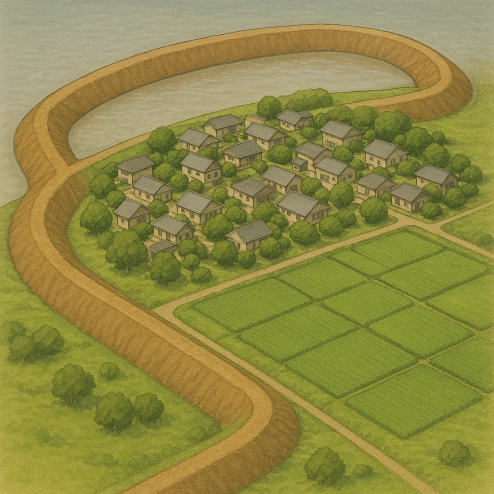

Ⅱ-12
語句
木曽川下流
── 村と田をぐるりと囲む
木曽川下流
の
①
輪中
…昔から
②
洪水
が多く、集落や耕地のまわりを
③
堤防
で囲んだ。
川の水（まわりより高い）
集落と耕地
川の水面より低い土地
③
③
①
水があふれると全部つかる
だから
③
でぐるりと囲む
＝この範囲ぜんぶが
①

どこ？
木曽川の下流
（濃尾平野の南西部）。木曽川・長良川・揖斐川が集まる所。
なぜ？
土地が川の水面より低く、大雨のたびに水があふれておそわれたから。
どうした？
集落と耕地のまわりを高い土手で輪のように囲み、水が入らないようにした。
第16章 中部地方
SEED EDUCATION